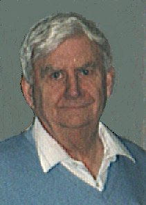

1. James MOORE was born in 1738 in Glasgow, Scotland. He died on 22 Nov 1820 in Long Reach, King's Cty, N. B..
He was married to Eleanor SUTTON about 1772. Eleanor SUTTON died on 30 May 1823 in Long Reach, Kings Cty, N. B.. James MOORE and Eleanor SUTTON had the following children:
2 i. Sutton MOORE was born before 1773 in lik.U.S.A.. He died after Mar 1828. According to family ledged fought in Napoleonic Wars and settled in England with his mother's people. In New Brunswick in March 1828 to sign quit claim deed releasing his claim on his father's land, Lott 16 Kingston Grant to his sister Eleanor Cronk
+3 ii. Ann (Nancy) MOORE.
+4 iii. Walter MOORE.
5 iv. Martha MOORE was christened on 23 Jun 1786 in Kingston, area N. B.. Bpt by Rev Richard Clarke Rector of Gagetown Anglican church as the Kingston church was not built until 1778. Family history says she married an U/K "CARD" no further info ever found
+6 v. James MOORE.
+7 vi. Eleanor Napier MOORE.
8 vii. Joseph Henry MOORE. "A" Joseph Henry Moore born 1803 married 22 Dec 1836 to Mary Ann Hill
5 children bpt at Kingston Anglican Church. No family info available which there should be if he was the son of James and Eleanor Moore.
9 viii. Samuel MOORE. No info to prove he was the son of James Moore
10 ix. Mary MOORE. No info to prove she was the daughter of James Moore
3. Ann (Nancy) MOORE was born in 1780 in U.S.A. She died on 29 Mar 1825 in Hampton, King's Cty, N.B.. She was buried at the Lakeside Anglican Churchyard , Hampton N.B
She was married to Jerome SEELY (son of Seth SEELY) about 1798 in Lik Kingston, King's Cty., N.B.. Jerome SEELY was born on 7 Jun 1772 in Stamford, Ct.. He died in Dec 1860 in Lik West Zorra T, Oxford Cty., Ont. Jerome Seely was the 7th of 10 children of Seth Seely (1737-1823) of Connecticut, the Loyalist who drew Lot 15 next to the James Moore lot #16 of the Kingston Grant Kings County. (Long Reach) There were many Marriages between the Moore and the Seely families (Even diagrams do not help!)
The Seely family has been well documented by Fanjoy and Ward "The Seelys of New Brunswick" (Pub 1992)
Jerome moved from Long Reach about 1803/05 to Lower Norton Parish Kings County where the rest of his children were born. After Ann (Nancy) died in 1825 he remarried to Margaert Hunter and had 3 more children . (would appear Margaret and Jerome agreed to disagree)
In August 1844 he accompanied his son Obadiah and son in law Henry "Beach" Britney
to West Zorra Twp, Oxford Cty On. purchasing with Henry the East 1/2 of Lot 2 Concession 4 (100 acres) he sold his interest in 1852. An entry in the Crawford diaries by George Crawford who live din the Zorra area under date of 29 December 1860 reads "Oald Mr. Seely Buried" Ann (Nancy) MOORE and Jerome SEELY had the following children:
11 i. James Jerome SEELY was born on 3 Nov 1799 in Long Reach Kings County N.B.
12 ii. Caroline SEELY was born in 1800 in Long Reach Kings County N.B. She died in 1848. She was unmarried
+13 iii. Obadiah SEELY.
+14 iv. Ann Charlotte SEELY.
+15 v. Walter SEELY.
16 vi. Lydia SEELY was baptized on 16 Jan 1807. He (or she) was born in Lower Norton Parish Kings Cty N.B..
17 vii. Linus SEELY was born on 9 Mar 1808 in Lower Norton Parish Kings Cty N.B..
18 viii. Robert SEELY was born 21Nov 1810 in Lower Norton Parish Kings Cty N.B..
19 ix. Jane Elizabeth SEELY was born about 1812/13 in Lower Norton Parish Kings Cty N.B..
+20 x. Mary SEELY.
21 xi. Hubert SEELY was born on 7 Mar 1818 in Lower Norton Parish Kings Cty N.B..
4. Walter MOORE was born in 1782 in U.S.A. He was baptized on 23 Jun 1786 in Kingston area Kings Cty, N. B.. He died between 1861 and 1871 in lik Kings Cty N.B.. Walter Moore came to New Brunswick as a infant with his parents James and Eleanor Moore
Bpt by Rev Richard Clarke of Gagetown Anglican Church as Kingston did not have a rector until 1787 when the Kingston Trinity Anglican Church was built.
He purchased Lot 1 of the Kingston Grant Kings County, portions of which are still owned by the family. He served as an ensign in the Kings County Regiment of Foot from 1805 to 1807 and later in the King's County militia. He was listed in the 1851 Kings County census as a farmer age 69 and in the 1861 census as age 80 religion Episcopalian (Anglican)
He was married to Phoebe GORHAM in 1810/11 in Lik King's Cty, N. B.. Phoebe GORHAM was born about 1787 in Lik Oak Point, King's County N.B.. She died between 1861 and 1871 in Lik King's Cty, N.B. Phobe Gorham was the daughter of Jonathon Gorham and Mary Watters, Loyalists from Stamford Connecticut They lived at Oak Point Kings County She was recorded in her father's will dated April 1824 as Phebe and given 15 pounds. Walter MOORE and Phoebe GORHAM had the following children:
22 i. James MOORE was born in Long Reach Kings County N.B. Residence Holderville , Long Reach ,unmarried
+23 ii. Ann Gorham MOORE.
24 iii. Lidia MOORE was born about 1813 in Long Reach Kings County N.B. She was baptized on 3 Nov 1813 in Trinity Anglican Ch Kingston N.B..
+25 iv. Phoebe Jane MOORE.
+26 v. Hannah Sophia MOORE.
+27 vi. John William MOORE.
+28 vii. Joseph Henry MOORE.
29 viii. Samuel MOORE was born in 1835 in Long Reach Kings County N.B. He was baptized on 21 Jun 1835 in Trinity Anglican Ch Kingston N.B.. He died about 1851 in Long Reach Kings County N.B. Shown in 1851 census (Taken 1852) of Kings Cty died age 17 of measles and pneumonia
30 ix. Mary MOORE was born in Lik Long Reach, King's Cty, N.B.. not shown with family in 1851 census of King's Cty
31 x. Margaret MOORE was born in Lik Long Reach, King's Cty, N.B.. Not shown in 1851 census of Kings Cty with family
6. James MOORE died in May 1853 in W. Zorra Twp, , Oxford Cty, , Ont.. He was buried on 7 May 1853. He was born after 7 May in 1788 in Long Reach, Kings Cty., N. B.. James Moore received the North one half of Lot 16 Kingston Grant Kings County N.B when his father James died in November 1820 with the provision that he provide for his mother, Eleanor. James was by occasion a carpenter, farmer, fisherman and school teacher
and in 1820 was a sergeant in the Local Militia.
By early 1840 's he a number of mortgages on his farm (which was very sandy in front along the river and very rough at the rear)
Following a number of friends and his brother in law George William Holder to moved to West Zorra Twp Oxford County in May 1844 with all his unmarried children.
Daughter Charlotte (who had married Water Seely) remained in New Brunswick but his other married children either accompanied him or moved shortly after to West Zorra . By March 1847 if not before he acquired the East 1/2 of Lot 2 Concession 3 West Zorra (100 acres). In March 1848 he sold the property to son Robert for 50 pounds. It is likely that he continued to live on the property as Robert did not marry until February 1850 . It seem that James and his wife Rachel continued to live in the area with his various children until their deaths in 1853 and 1860. The family were Anglicans. Nearly 800 descendants have been identified to the generation of his second great grandchildren. Expanded text file available.
He was married to Rachel HOLDER (daughter of Jacob HOLDER and Mary SHARP) on 5 Aug 1811 in Kingston Kings Cty, N. B.. Rachel HOLDER was born on 23 Dec 1791 in Long Reach, Kings Cty., N. B.. She died on 8 Jul 1860 in Likely W. Zorra Twp., Oxford Co., Ont.. Rachel was the second of nine children of Jacob Holder UEL and Mary Sharp (Daughter of Samuel Sharp UEL) She was raised on Lot 2 Kingston Grant (Long Reach) which her father Jacob had purchased from his father in law Samuel Sharp who received it as a Loyalist Grant
Expanded Files available on the Holder family and their ancestors. James MOORE and Rachel HOLDER had the following children:
+32 i. Eleanor Ann MOORE.
33 ii. Elizabeth Mary MOORE was christened in Jul 1814 in Anglican Church, , Westfield Parish, King's Cty, N. B.. She died before 1823 in Long Reach Kings County N.B. She likely died prior to the birth of her sister Mary Elizabeth Moore in 1823
+34 iii. Jane MOORE.
+35 iv. Walter MOORE.
+36 v. Sarah Holder MOORE.
+37 vi. Mary Elizabeth MOORE.
+38 vii. Charlotte Rachel MOORE.
+39 viii. Robert James MOORE.
+40 ix. Caroline Amelia MOORE.
41 x. Lydia Catherine MOORE was born about 1832 in Long Reach Kings County N.B. She was christened in Oct 1835 in Trinity Anglican, Kingston, King's County, N. B.. She died after 1861 in Ont or Mich.. She came to West Zorra with her parents. In the 1851 Census of West Oxford Twp, she was age 19 living with Senica Lewis an Innkeeper so it is likely she was working as a domestic for him. In the 1861 Census of the Town of Sarnia Lambton County On.
She is listed as age 29 born New Brunswick and was likely a servant at that time also.
A completely lost trail, no family stories etc.
+42 xi. Susan Maria MOORE.
7. Eleanor Napier MOORE was buried in 1852 in per Long Reach Cemetery. She died on 9 Feb 1852 in Lik. Lot 16 Long Reach, Kings Cty., N.B.. She was born abt 1791, age 60 in 1851 census in Long Reach, King's Cty, N.B.. It is not known where her Second Name "Napier" came from. It is a family name connected with Scottish family peerage but no connection has been found to link her parents to peerage in Scotland . She was married by Rev Elais Scovil of Trinity Anglican Church
Eleanor and her husband, Asa Cronk received 1/2 of Lot 16 Kingston Grant (Long Reach) from her father James Moore . The property remained in the family for many years.
She was married to Asa CRONK on 22 Oct 1814 in Kingston Kings County N.B.. Asa CRONK was born in 1795 in King's County N.B.. He was buried in Sep 1885 in Long Reach, King's Cty N.B.. He died on 22 Sep 1885 in Moss Glen, Kings County N.B.. Asa was the son of Henry Cronk and Mary Wey/Way Loyalists. Henry is listed in Esther Clark Wright's "The Loyalists of New Brunswick"as Henry Cronk (hite) King's American Regiment.
Asa was a farmer on Lot 16 Kingston Grant and was listed in the 1851, 1861 and 1871 census of King's County.
Eleanor Napier MOORE and Asa CRONK had the following children:
43 i. James Kimball CRONK was born about 1815 in Long Reach Kings County N.B. He was baptized on 19 Aug 1819 in Trinity Anglican Church Kingston N.B..
+44 ii. Henry William CRONK.
45 iii. Eleanor Elizabeth CRONK was born about 1818 in Long Reach Kings County N.B. She was baptized on 19 Aug 1819 in Trinity Anglican Church Kingston N.B.. She died after 1871 in lik Kings Cty N.B.. unmarried , At home in 1851, 61 and 71 census of Kings County
46 iv. Mary Jane CRONK was baptized in 1821 in Trinity Anglican Church Kingston N.B.. She was born in Long Reach Kings County N.B.
+47 v. Sarah Anne CRONK.
48 vi. John Edward CRONK was baptized on 11 Jul 1826 in Trinity Anglican Church Kingston N.B.. He was born in Long Reach Kings County N.B. Not yet found in census records
+49 vii. Francis Elizabeth (Fanny) CRONK.
+50 viii. Stephen Benjamin CRONK.
51 ix. Julia Margaret CRONK was born about 1832 in Long Reach Kings County N.B. likely unmarried . At home in 1871 Census of Kings County
52 x. Lydia Martha CRONK was born about 1832 in Long Reach Kings County N.B. She died on 8 Oct 1891 in Moss Glen, Kings County N.B.. She was buried in Long Reach Kings County N.B. Likely unmarried. At home in 1871 census of Kings County
+53 xi. Amanda (Mandy) CRONK.
13. Obadiah SEELY was born in 1802 in Long Reach, King's County N.B.. He died in 1888 in Brunel Township, Muskoka District, On.. He was buried in Port Sydney, Anglican Ch Yd., Muskoka District, On..
He was married to Eleanor Ann MOORE (daughter of James MOORE and Rachel HOLDER) on 20 Jan 1836 in Long Reach, King's County, N.B.. Eleanor Ann MOORE was born in 1812 in lik Westfield Parish King's Cty ., N.B.. She was christened on 20 Jun 1813 in Westfield Parish, King's County, N.B.. She died after 1 Jul 1867 in Lik West Zorra T, Oxford Cty, Ont.. She was buried before Jan 1868. Her husband Obadiah Seely was her first cousin and son of Ann (Nancy) Moore and Jerome Seely Obadiah SEELY and Eleanor Ann MOORE had the following children:
+54 i. Augusta SEELY.
+55 ii. Adeline SEELY.
+56 iii. Harriet Elizabeth SEELY.
+57 iv. Isabella Ann SEELY.
58 v. Caroline SEELY was born in 1843 in Long Reach Kings County N.B. It is said that she married a hired hand named :"Black" who lived in Zorra Twp and the couple went to the USA
59 vi. Emily SEELY was born in 1844 in Long Reach Kings County N.B. She died in liik Brunel Twp Muskoka District On.. She never married She went to Brunel Twp to live with her brother Collingwood after 1871
census.
60 vii. James Collingwood SEELY was born on 8 Oct 1845 in West Zorra Twp, , Oxford Cty, Ont. He died after 1879 in Lik Brunel Twp, Muskoka District. He never married. He moved from Oxford County to Lot 11 Concession 9 Brunel Twp Muskoka district between 1871 and 1879.
+61 viii. Byron Wilmot SEELY.
+62 ix. Gertrude Theresa SEELY.
+63 x. Thadeus Sobreski SEELY.
64 xi. Arthur Miles SEELY was born in 1854 in Zorra Twp. Oxford County, On.. He died in Michigan. He moved to Brunel Twp with his parents and when Lot 4 Concession 9 where he settled was taken by another person, he moved to Michigan where he committed suicide
He never married
14. Ann Charlotte SEELY was born about 1803 in Lower Norton Parish Kings Cty N.B.. She died on 16 May 1872 in lik Enniskillen Twp Lambton Cty On..
She was married to Henry "Beach" BRITNEY (son of John BRITNEY and Tamar Seely CARRINGTON) on 9 Jun 1830 in Trinity Anglican Church Kingston N.B.. Henry "Beach" BRITNEY was born about 1799 in Long Reach Kings County N.B. He died on 31 Aug 1868 in lik. Plympton Twp Lambton Cty On. Ann Charlotte SEELY and Henry "Beach" BRITNEY had the following children:
+65 i. Norval Oscar BRITNEY.
66 ii. James Jerome BRITNEY was born in 1832 in Long Reach Kings Cty N.B..
+67 iii. Obadiah BRITNEY.
68 iv. Melvina BRITNEY was born in May 1836 in Long Reach Kings County N.B. She died on 1 Sep 1852 in West Zorra Twp, , Oxford Cty, On..
69 v. Allen BRITNEY died about 1841 in Long Reach Kings County N.B. He was born maybe abt 1838 in Long Reach Kings County N.B. Beer's commerative Biographical Sketches of Lambton notes he died age 3
70 vi. Sophia BRITNEY was born about 1840 in Long Reach Kings County N.B.
71 vii. Henry BRITNEY was born on 12 Feb 1843 in Long Reach Kings County N.B.
15. Walter SEELY was born on 19 Mar 1806 in , King's County N.B.. He died on 14 Jan 1883 in Lik New Bridge, N. B.. He was buried in Londonderry, Anglican Chyd N.B..
He was married to Charlotte Rachel MOORE (daughter of James MOORE and Rachel HOLDER) on 15 Sep 1842 in Lik Long Reach, King's Cty, N.B.. Charlotte Rachel MOORE was born in 1825 in Long Reach, King's Cty., N. B.. She died on 21 Dec 1895 in Lik New Bridge N. B. She was buried in Anglican Chyd., Londonderry, N. B.. She married her first cousin Walter Seely son of Ann (Nancy )Moore and Jerome Seely
It was her first marriage and his second Walter SEELY and Charlotte Rachel MOORE had the following children:
72 i. James Oscar SEELY.
73 ii. Linus SEELY was born about 1846 in N.B.. He died on 29 Jul 1850 in N.B..
+74 iii. Robert Bruce SEELY.
75 iv. Henry S. SEELY was born in 1849 in N.B..
76 v. Elizabeth Jane SEELY was born on 4 Dec 1852 in N.B..
77 vi. Norval SEELY was born in 1853 in N.B.. He died in 1858. He was buried in Anglican Chyd., Londonderry, Kings Cty..
78 vii. Gilford Theodore SEELY was born on 11 Jul 1854.
+79 viii. Evangeline Helen SEELY.
20. Mary SEELY was born on 10 Sep 1815 in Lower Norton Parish Kings Cty N.B.. She died on 13 Feb 1898 in Enniskillen Twp, Lambton County., On.. She was buried in Oil City Cem, Enniskillen Twp., Lambton County On.
She was married to Walter MOORE (son of James MOORE and Rachel HOLDER) on 21 Feb 1842 in Long Reach, King's Cty N. B.. Walter MOORE was born on 17 Jun 1816 in Long Reach, King's Cty., N. B.. He died on 18 Mar 1890 in Enniskillen, Lambton Ont. He was buried in Oil City Cem., Enniskillen Twp., Lambton Cty, , Ont.. He married his first cousin Mary Seely daughter of Ann (Nancy )Moore and Jerome Seely Mary SEELY and Walter MOORE had the following children:
80 i. Huebert SEELY MOORE was born about 1842 in Long Reach, King's Cty, N. B.. He died after 1912 in Sault ste Marie, or Per, Mich, or Ont.
81 ii. James H. MOORE was born on 30 Apr 1844 in Long Reach, King's County N.B.. He died on 19 Oct 1872 in Port Huron area, St Clair Cty., Mich.. He was buried in ukn.
82 iii. Hamilton MOORE was born after Jun 1845 in Long Reach, King's Cty, N. B.. He died on 14 Sep 1848 in West Zorra Twp., Oxford Cty, Ont.
+83 iv. Eleanor (Tillie) Matilda MOORE.
+84 v. Amanda MOORE.
+85 vi. Albert Huron MOORE.
+86 vii. Byron Walter MOORE.
23. Ann Gorham MOORE was baptized on 3 Nov 1813 in Trinity Anglican Ch Kingston N.B.. She was born in Long Reach Kings County N.B.
She was married to Beverly VINCENT. Ann Gorham MOORE and Beverly VINCENT had the following children:
87 i. Walter VINCENT.
88 ii. Mary VINCENT.
89 iii. Piwald VINCENT.
90 iv. Mary Anne VINCENT.
91 v. Margaret Elizabeth "Eliza" VINCENT. Married name MacAnulty one daughter Eliza who was a school teacher and family historian
Eliza had no children. She died in 1920's and buried in Kingston Cemetery and donated plaque to Trinity Anglican Church in honour of Margaert Elizabeth and Beverly Vincent
25. Phoebe Jane MOORE was baptized in Sep 1823 in Trinity Anglican Church Kingston N.B.. She was born in Long Reach Kings County N.B. family info from Blair Barlett 87 Shillington Road St John N.B.
She was married to James STACKHOUSE in 1840. Phoebe Jane MOORE and James STACKHOUSE had the following children:
92 i. Phoebe E. STACKHOUSE. She married Bartholemew Armstrong child Adila Amstrong who married Samuel Bartlett
26. Hannah Sophia MOORE was baptized in Sep 1823 in Trinity Anglican Ch Kingston N.B.. She died on 12 Oct 1901 in Kings Cty N.B.. She was born in Long Reach Kings County N.B. Hannah was a daughter of Walter Moore and as Henry Cronk was a son of Walter's sister Eleanor Moore Cronk, this was also a marriage of first cousins
She was married to Henry William CRONK (son of Asa CRONK and Eleanor Napier MOORE) on 1 Dec 1853 in Kings Cty N.B.. Henry William CRONK was born about 1816 in Long Reach Kings County N.B. He was baptized on 19 Aug 1819 in Trinity Anglican Church Kingston N.B.. He died after 1865 in lik King's County N.B. Henry Cronk seems to have inherited the farm lot 16 Kingston Grant from his parents Asa Cronk and Eleanor Moore. In turn his son William inherited it from him.
Anglican, Listed as a farmer in 1871 business directory of Long Reach Hannah Sophia MOORE and Henry William CRONK had the following children:
93 i. Henry CRONK was born about 1855 in Kings Cty N.B..
94 ii. James Edward CRONK was born in 1856 in Kings Cty N.B.. He died on 30 Jan 1857 in Kings Cty N.B.. died age1 1/2 yrs Was he a twin to Henry?
95 iii. Kimball Walter CRONK was born about 1859 in Kings Cty N.B.. He was listed as Walter C. Cronk age 12 in 1871 Kings County census
96 iv. Isaiah CRONK was born about 1862 in Kings Cty N.B..
97 v. William CRONK was born about 1865 in Kings Cty N.B..
27. John William MOORE was born on 22 Jan 1827 in Long Reach Kings County N.B. He was baptized on 22 Feb 1828 in Trinity Anglican Ch Kingston N.B.. He died in 1909 in Long Reach Kings County N.B. He was buried in Long Reach Cemetery Kings Cty N.B. He and his brother Henry were farmers on the land owned by their father Walter (Lot 1 Kingston Grant)
He was married to Isabelle Douglas WILLIAMS on 20 Oct 1870. Isabelle Douglas WILLIAMS was born in 1840. She died in 1912 in Long Reach Kings Cty N.B. She was buried in Long Reach Cemetery Kings Cty N.B. John William MOORE and Isabelle Douglas WILLIAMS had the following children:
98 i. Ann MOORE was born in 1874 in Long Reach Kings Cty N.B. She died in 1966. Married a "Dunlop" and secondly a "Vincent" Children ?
99 ii. Alma MOORE was born in 1875 in Long Reach Kings Cty N.B. She died in 1948. She married U/K Secord
100 iii. Lillian MOORE was born in 1876 in Long Reach Kings Cty N.B. She died in 1942. She married U/K McLaughlin
101 iv. Walter Douglas MOORE was born on 11 Apr 1877 in Long Reach Kings Cty N.B. He died in 1971. He was buried in Long Reach Cemetery Kings Cty N.B. Walter inherited farm Lot 1 from his father
102 v. Eleanor Janet "Ella Jennie" MOORE was born in 1878 in Long Reach Kings Cty N.B. She died in 1956.
28. Joseph Henry MOORE was born in 1830 in Trinity Anglican Ch Kingston N.B.. He was baptized on 14 Feb 1831 in Trinity Anglican Ch Kingston N.B..
He was married to Annie LOGAN. Joseph Henry MOORE and Annie LOGAN had the following children:
103 i. Roberta MOORE. She married U/K Roberts
104 ii. Jean MOORE. She married U/K Grant
32. Eleanor Ann MOORE was born in 1812 in lik Westfield Parish King's Cty ., N.B.. She was christened on 20 Jun 1813 in Westfield Parish, King's County, N.B.. She died after 1 Jul 1867 in Lik West Zorra T, Oxford Cty, Ont.. She was buried before Jan 1868. Her husband Obadiah Seely was her first cousin and son of Ann (Nancy) Moore and Jerome Seely
She was married to Obadiah SEELY (son of Jerome SEELY and Ann (Nancy) MOORE) on 20 Jan 1836 in Long Reach, King's County, N.B.. Obadiah SEELY was born in 1802 in Long Reach, King's County N.B.. He died in 1888 in Brunel Township, Muskoka District, On.. He was buried in Port Sydney, Anglican Ch Yd., Muskoka District, On.. Eleanor Ann MOORE and Obadiah SEELY had the following children:
+54 i. Augusta SEELY.
+55 ii. Adeline SEELY.
+56 iii. Harriet Elizabeth SEELY.
+57 iv. Isabella Ann SEELY.
58 v. Caroline SEELY.
59 vi. Emily SEELY.
60 vii. James Collingwood SEELY.
+61 viii. Byron Wilmot SEELY.
+62 ix. Gertrude Theresa SEELY.
+63 x. Thadeus Sobreski SEELY.
64 xi. Arthur Miles SEELY.
34. Jane MOORE was christened in Jul 1814 in Anglican Ch., Westfield Par, King's Cty., N. B.. She died on 4 Oct 1875 in Sarnia Twp., Lambton County On.
She was married to Norval Oscar BRITNEY (son of Henry "Beach" BRITNEY and Ann Charlotte SEELY) about 1851 in Lik West Zorra Twp, Oxford Cty, Ont. Norval Oscar BRITNEY was born in 1831 in Long Reach Kings County N.B. He was christened on 21 Aug 1831 in Trinity Anglican, Kingston, King's Cty., N. B.. He died on 25 Oct 1890 in Enniskillen Twp, Lambton Cty, Ont.. He was buried in Unkn. Jane MOORE and Norval Oscar BRITNEY had the following children:
+105 i. Charlotte Amelia BRITNEY.
+106 ii. Anne Jane BRITNEY.
35. Walter MOORE was born on 17 Jun 1816 in Long Reach, King's Cty., N. B.. He died on 18 Mar 1890 in Enniskillen, Lambton Ont. He was buried in Oil City Cem., Enniskillen Twp., Lambton Cty, , Ont.. He married his first cousin Mary Seely daughter of Ann (Nancy )Moore and Jerome Seely
He was married to Mary SEELY (daughter of Jerome SEELY and Ann (Nancy) MOORE) on 21 Feb 1842 in Long Reach, King's Cty N. B.. Mary SEELY was born on 10 Sep 1815 in Lower Norton Parish Kings Cty N.B.. She died on 13 Feb 1898 in Enniskillen Twp, Lambton County., On.. She was buried in Oil City Cem, Enniskillen Twp., Lambton County On. Walter MOORE and Mary SEELY had the following children:
80 i. Huebert SEELY MOORE.
81 ii. James H. MOORE.
82 iii. Hamilton MOORE.
+83 iv. Eleanor (Tillie) Matilda MOORE.
+84 v. Amanda MOORE.
+85 vi. Albert Huron MOORE.
+86 vii. Byron Walter MOORE.
36. Sarah Holder MOORE was born on 17 Jun 1819 in Long Reach, King's Cty, N.B... She died on 15 Nov 1889 in Enniskillen Twp, Lambton County On.. She was buried in Hillsdale Cem, Petrolia, , Lambton County, On...
She was married to John BRITNEY (son of John BRITNEY and Tamar Seely CARRINGTON) on 15 Sep 1842 in Trinity Anglican Ch, Kingston King's Cty., N. B,. John BRITNEY was born in 1802 in Long Reach, King's Cty., N.B.. He died on 20 Aug 1884 in Enniskillen Twp, Lambton County On.. He was buried in Hillsdale Cem, Petrolia. Sarah Holder MOORE and John BRITNEY had the following children:
+107 i. Susan Catherine BRITNEY.
108 ii. Maria Ann BRITNEY was born on 9 Feb 1845 in Long Reach, King's Cty., N. B.. She died on 23 Apr 1847 in West Zorra Twp, Oxford Cty, Ont. She was buried in West Zorra.
109 iii. Edwin Dormer BRITNEY was born on 7 Apr 1846 in West Zorra Twp, , Oxford Cty, Ont. He died on 19 Nov 1919 in Enniskillen Twp., Lambton County On.. He was buried in Hillsdale Cem, Britney Plot, Petrolia, Ont..
+110 iv. Theodore Ormand BRITNEY.
+111 v. Oscar Lebarron BRITNEY.
112 vi. Robert James BRITNEY was born on 20 Jun 1851 in West Zorra Twp., Oxford Cty., Ont.. He died in Jul 1851 in West Zorra Twp., Oxford Cty., Ont..
+113 vii. Emily Antoinette BRITNEY.
+114 viii. Ellen Louise BRITNEY.
+115 ix. Marion Margaret BRITNEY.
+116 x. Charlotte Jane BRITNEY.
37. Mary Elizabeth MOORE was born about 1823 in Long Reach, King's Cty., N. B.. She died after 1861 in Ont or Mich..
Mary Elizabeth MOORE had the following children:
+117 i. Isora Alberta Bianca MOORE (Britney).
38. Charlotte Rachel MOORE was born in 1825 in Long Reach, King's Cty., N. B.. She died on 21 Dec 1895 in Lik New Bridge N. B. She was buried in Anglican Chyd., Londonderry, N. B.. She married her first cousin Walter Seely son of Ann (Nancy )Moore and Jerome Seely
It was her first marriage and his second
She was married to Walter SEELY (son of Jerome SEELY and Ann (Nancy) MOORE) on 15 Sep 1842 in Lik Long Reach, King's Cty, N.B.. Walter SEELY was born on 19 Mar 1806 in , King's County N.B.. He died on 14 Jan 1883 in Lik New Bridge, N. B.. He was buried in Londonderry, Anglican Chyd N.B.. Charlotte Rachel MOORE and Walter SEELY had the following children:
72 i. James Oscar SEELY.
73 ii. Linus SEELY.
+74 iii. Robert Bruce SEELY.
75 iv. Henry S. SEELY.
76 v. Elizabeth Jane SEELY.
77 vi. Norval SEELY.
78 vii. Gilford Theodore SEELY.
+79 viii. Evangeline Helen SEELY.
39. Robert James MOORE was born on 15 Mar 1827 in Long Reach, Kings Cty., N. B.. He died on 10 Oct 1899 in Gladwin City, Gladwin Cty., Mich.. He was buried in Highland Cem, , Gladwin, Michigan.
He was married to Catherine AVERY (daughter of Alanson AVERY and Nancy (Annetje) EGLIN) on 27 Feb 1850 in W, Zorra Twp., Oxford Cty., Ont.
Catherine AVERY was born on 17 Nov 1830 in W. Zorra Twp., Oxford Cty., Ont. She died on 20 Feb 1928 in Spokane, Wash, St.. She was buried in Highland Cemetery, Gladwin, Michigan.
+118 i. Rachel Adelaide MOORE.
+119 ii. George Frederick MOORE.
+120 iii. Nancy (Nina) Maria MOORE. .
+121 iv. James Robert MOORE.
+122 v. Alanson Avery MOORE.
+123 vi. Mary Jane MOORE.
+124 vii. Eliza MOORE.
+125 viii. Eleanor Lillian MOORE.
+126 ix. Janet Elsey MOORE.
127 x. Catherine (Katy) MOORE was born on 18 Sep 1871 in Beachville, West Oxford Twp. Oxford Cty., Ont.. She died on 4 Jul 1887 in Gladwin Twp, Gladwin Cty., Mich.. She was buried in Highland Cem, Gladwin City, Mich..
40. Caroline Amelia MOORE was born on 24 Aug 1828 in Long Reach, King's Cty, N. B... She died on 3 Nov 1893 in Harrisville, Alcona Cty., Mich.. She was buried in Springport Cem., Harrisville, Alcona Cty., Mich.
She was married to Silas W.(William?) THORNTON (son of Albert THORNTON and Rachel WILLIAMS) on 1 May 1852 in West Zorra Twp, Oxford Cty, Ont. Silas W.(William?) THORNTON was born about 1829 in Lik.West Zorra T, Oxford Cty, Ont. He died on 24 Aug 1903 in Harrisville Twp., Alcona Cty., Mich.. He was buried in Springport Cem, Harrisville Twp., Alcona Cty, Mich.. Caroline Amelia MOORE and Silas W.(William?) THORNTON had the following children:
+128 i. Theresa THORNTON.
+129 ii. James T. THORNTON.
+130 iii. Silas THORNTON.
+131 iv. Ida May THORNTON.
+132 v. Ada THORTON.
+133 vi. Maude (Della) Madella THORNTON.
+134 vii. Mary Ester THORNTON.
+135 viii. Caroline Augusta THORNTON.
+136 ix. Olla (Bertie) Alberta THORNTON.
42. Susan Maria MOORE was born on 9 Mar 1839 in Long Reach, King's Cty, N. B.. She died on 1 Nov 1909 in Au Sable Twp., Iosco Cty., Mich.. She was buried in Pinecrest Cem., Oscoda, Iosco Cty., Mich.
She was married to Truman J. (James ?) THORNTON (son of Albert THORNTON and Rachel WILLIAMS) in 1855/56 in West Zorra Twp., Oxford Cty., Ont. Truman J. (James ?) THORNTON was born on 15 Mar 1836 in West Zorra Twp, Oxford Cty., Ont. He died on 11 Apr 1911 in Au Sable Twp, Iosco Cty, Mich. He was buried in Pinecrest Cem, Plot D-484, Oscoda , Iosco C, Mich.. Susan Maria MOORE and Truman J. (James ?) THORNTON had the following children:
+137 i. Lyman A. THORNTON.
+138 ii. Albert James THORNTON.
+139 iii. Ida THORNTON.
+140 iv. Estella T. THORNTON.
+141 v. Frederick THORNTON.
142 vi. Chauncey THORNTON was born in 1869 in Forester Twp., Sanilac Cty, Mich.. He died before 1880 in Sanilac, or, Ausable, Mich..
+143 vii. Charles William THORNTON.
144 viii. Un.K, THORNTON was born between 1856 and 1875. He (or she) died before 1900.
44. Henry William CRONK was born about 1816 in Long Reach Kings County N.B. He was baptized on 19 Aug 1819 in Trinity Anglican Church Kingston N.B.. He died after 1865 in lik King's County N.B. Henry Cronk seems to have inherited the farm lot 16 Kingston Grant from his parents Asa Cronk and Eleanor Moore. In turn his son William inherited it from him.
Anglican, Listed as a farmer in 1871 business directory of Long Reach
He was married to Mary Ann CRONK on 24 Apr 1846 in lik Kingston N.B. Mary Ann CRONK was born about 1817 in lik. Kings Cty. She died on 26 Dec 1851 in Kingston , Kings Cty, N. B. Mary Ann was the daughter of Stephen Cronk and Rebecca Parker and was a first cousin of Henry.
She died likely as result of complications in childbirth of son Stephen Henry, 26 Dec 1851) Henry William CRONK and Mary Ann CRONK had the following children:
145 i. Rebecca Adeline CRONK was born about 1847 in Kings Cty N.B.. She died on 18 Aug 1852 in Kings Cty N.B.. Died age 4yrs
146 ii. Margaret Eleanor CRONK was born in 1850 in Kings Cty N.B.. She died on 11 Aug 1852 in Kings Cty N.B..
147 iii. Stephen Henry CRONK was born in 1851 in Kings Cty N.B.. He died on 11 Jan 1852 in Kings Cty N.B.. died age 2 months
He was married to Hannah Sophia MOORE (daughter of Walter MOORE and Phoebe GORHAM) on 1 Dec 1853 in Kings Cty N.B.. Hannah Sophia MOORE was baptized in Sep 1823 in Trinity Anglican Ch Kingston N.B.. She died on 12 Oct 1901 in Kings Cty N.B.. She was born in Long Reach Kings County N.B. Hannah was a daughter of Walter Moore and as Henry Cronk was a son of Walter's sister Eleanor Moore Cronk, this was also a marriage of first cousins Henry William CRONK and Hannah Sophia MOORE had the following children:
93 i. Henry CRONK.
94 ii. James Edward CRONK.
95 iii. Kimball Walter CRONK.
96 iv. Isaiah CRONK.
97 v. William CRONK.
47. Sarah Anne CRONK was baptized on 11 Jul 1826 in Trinity Anglican Church Kingston N.B.. She was born in Long Reach Kings County N.B.
She was married to Cabel Davis CRAWFORD on 2 Dec 1845 in lik Kings Cty N.B.. Cabel Davis CRAWFORD was born on 3 Jul 1816 in Long Reach Kings County N.B. He was son of Robert Davis Crawford
49. Francis Elizabeth (Fanny) CRONK was born about 1827.
She was married to John BEESLEY on 9 Oct 1855 in St John N.B.
50. Stephen Benjamin CRONK was born about 1829 in Long Reach Kings County N.B. He died aft 1871 census. He adopted the children of his wife Mary Ann McGee's marriage to Joseph Nickerson (3) and to Neilly O'Neill (4) He was listed as a labourer in the 1871 census of Kings's County
He was married to Mary Ann MCGEE on 29 Mar 1860 in lik Kings Cty N.B.. Mary Ann MCGEE was born in 1824 in Ireland. Stephen Benjamin CRONK and Mary Ann MCGEE had the following children:
148 i. Benjamin CRONK was born about 1862 in lik. Kings Cty N.B..
149 ii. Alexander CRONK was born about 1865 in lik Kings Cty N.B..
150 iii. Samuel CRONK was born about 1869 in lik Kings Cty N.B..
53. Amanda (Mandy) CRONK was born on 2 Feb 1834 in Long Reach Kings County N.B. She died on 19 Jan 1898 in Moss Glen, Kings County N.B.. She was buried in St James Cemetery Long Reach N.B..
She was married to George Samuel John GRAY on 7 Jun 1864. George Samuel John GRAY was born on 30 Mar 1840 in Great Wakering Eng. He died on 25 Sep 1915. He was buried in St James Cemetery Long Reach N.B.. George was Sgt Major in the 74th Battalion of Militia (New Brunswick) in 1885 serving til June 1890. He was a blacksmith by occupation. Amanda (Mandy) CRONK and George Samuel John GRAY had the following children:
151 i. Eleanor Rebecca GRAY was born on 29 Jul 1866 in Moss Glen, Kings County N.B.. He died on 20 May 1947 in Centerton Kings cty.
Prepared by:R. G. Moore77 Metcalfe StSt Thomas OntarioN5R 3K6rmoore@wwdc.com
Website provided by:TravelBack in Time
© All rights reserved 2000-2001-2002, no coping or reproduction of Photographs or other material without express written permission. Please contact R.G. Moore for permission. Linking to this page is permissible, please request specific instructions from webmaster.
|

|
{kind=link}
{kind=link}
{kind=link}
{kind=link}
{kind=link}
{kind=link}
{kind=link}
{kind=link}
{kind=link}
{kind=link}